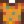

Crab Cakes
| Crab Cakes | ||||||||||
| Crab, bread crumbs, and egg formed into patties then fried to a golden brown. | ||||||||||
| Information | ||||||||||
| Source | Cooking | |||||||||
| Buff(s) | ||||||||||
| Buff Duration | ||||||||||
| Energy / Health |
|
|||||||||
| Sell Price |
| |||||||||
| ||||||||||
| Recipe | ||||||||||
| Recipe Source(s) |
| |||||||||
| Ingredients | ||||||||||
Crab Cakes are a cooked dish. They are prepared using either the kitchen inside an upgraded farmhouse or a Cookout Kit.
Iridium Crabs in the Skull Cavern may drop Crab Cakes when slain (50% chance). Gus will also sell an unlimited number of Crab Cakes at The Stardrop Saloon for  550g each for approximately 4 days after viewing Willy's 6-heart cutscene. It is also sold by the Calico Egg Merchant in the Desert Festival for
550g each for approximately 4 days after viewing Willy's 6-heart cutscene. It is also sold by the Calico Egg Merchant in the Desert Festival for  10 Calico Eggs. 5 Crab Cakes can be obtained as a prize from the Prize Machine.
10 Calico Eggs. 5 Crab Cakes can be obtained as a prize from the Prize Machine.
Gifting
| Villager Reactions
| |
|---|---|
| Love | |
| Like | |
| Dislike | |
Bundles
Crab Cakes are not used in any bundles.
Tailoring
Crab Cakes are used in the spool of the Sewing Machine to create the Crab Cake Shirt.  It can be used in dyeing, serving as an orange dye at the dye pots, located in Emily's and Haley's house, 2 Willow Lane.
Quests
Crab Cakes are not used in any quests.
History
- 1.4: Can now be used in Tailoring.
- 1.5: Can now be prepared using a Cookout Kit.
- 1.6: Can now be purchased from Gus at the Desert Festival. Can now be obtained as a prize from the Prize Machine.